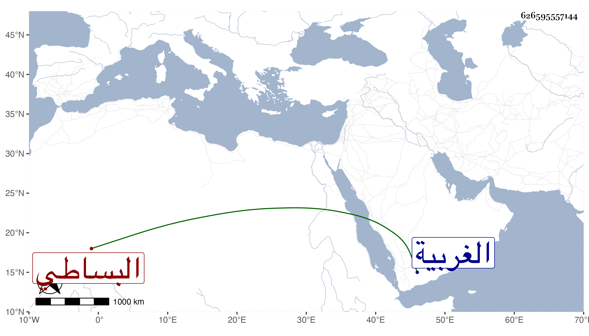

0902Sakhawi.DawLamic.ITO20230111-ara1.EIS1600.626595557144
Biography ID: 626595557144
البساطي بكسر أوله قرية من الغربية بالأعمال البحرية ويقال لها بساط قروض اسم رومي وسماها ياقوت في المشترك بسوط بواو بدل الألف مع فتح أوله سليمان ويوسف ابنا خالد بن نعيم وابن ثانيهما العز محمد وابن عمهما الشمس محمد بن أحمد ابن عثمان بن نعيم وبنوه العز عبد العزيز وعبد الغني وفاطمة وابنا أولهما خير الدين أبو الخير محمد وبدر الدين محمد وأختهما سعادات زوجة البدر عبد الرحيم الأبناسي وابنا ثانيهما بدر الدين محمد المدعو دبيس وأمه أمة لأبيه ومحمد بن خالد ابن جامع .
